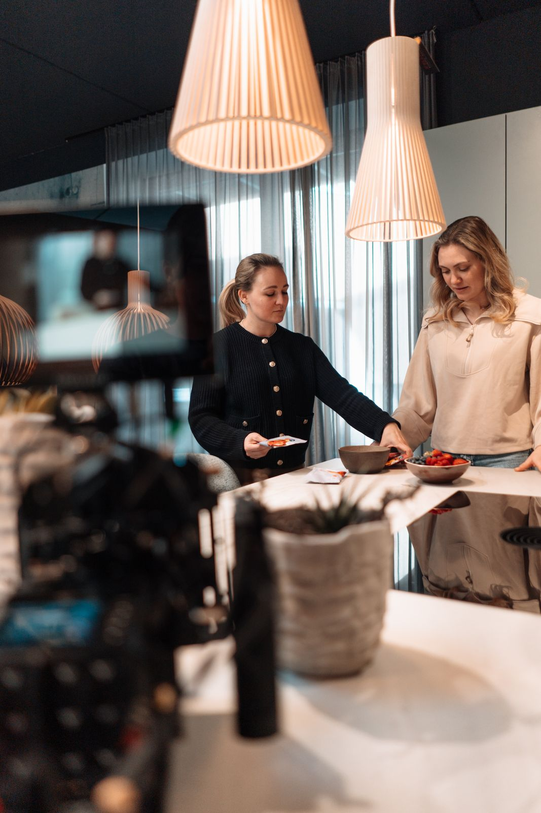

Contenttage
Ein Produkt, zwei Bildwelten und Content für mehrere Wochen - produziert an einem gebündelten Drehtag. Für Purora entstand rund um den neuen Mixer kein einzelner Produktfilm, sondern ein ganzes Content-System.
Zwei Bildwelten, ein Produkt.
Im Mittelpunkt des Content Days stand der Purora Mixer mit seinem Design, seinen technischen Funktionen und der Markenidee dahinter. Dafür entwickelten wir zwei unterschiedliche visuelle Welten - und gewannen aus einem kompakten Produktionstag möglichst viele eigenständige Inhalte.
Funktion & Verständnis
Ein helles, reduziertes Setting zeigt Bedienung, Produktdetails und Funktionen klar und verständlich - vom Schritt-für-Schritt-Erklärvideo bis zu kurzen Produkt- und Geschmacksclips.
Emotion & Vision
Ein dunkles, cinematisches Setting übersetzt die Vision von Purora in emotionale Bilder - mit Lichtreflexen, Makroaufnahmen und ruhigen Produktbewegungen.
Modular statt einmalig.
Neben zwei Hero-Varianten entstanden ein Erklärvideo, kurze Produkt- und Geschmacksclips, KI-generierte Sequenzen sowie eine flexible B-Roll-Bibliothek für Instagram, Website und weitere Marketingmaßnahmen.



Ein Drehtag, Wochen an Ausspielung.
Ein modular aufgebautes Content-Paket, das Produktinformation und Markenwirkung verbindet: mehrere eigenständige Videos, Varianten für Quer- und Hochformat, KI-Clips, Fotos und eine flexible B-Roll-Bibliothek - bereit für eine kontinuierliche Ausspielung über mehrere Kanäle und Wochen.
Der gebündelte Content Day ist das Herzstück von Dailies: alle Formate an einem Tag mitgedacht, produziert und über das Quartal ausgespielt.